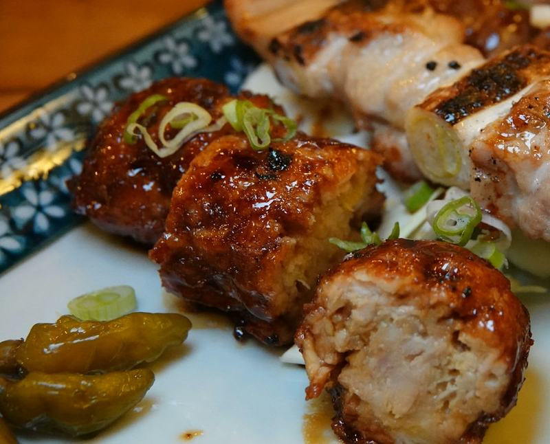
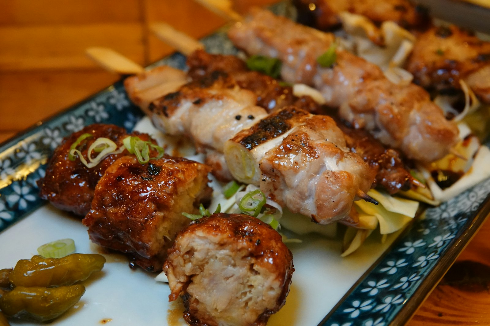
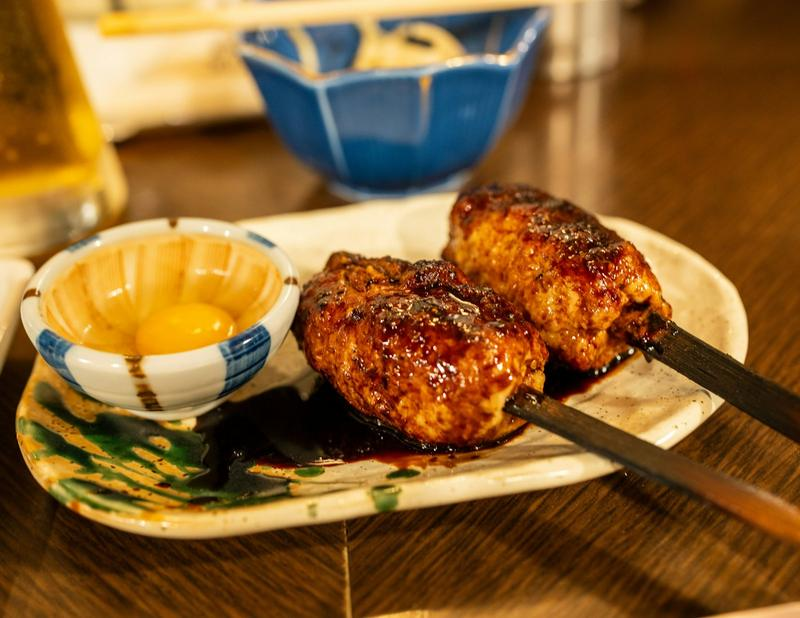

いちばん人気
おまかせ串 五本盛り
ねぎま・もも・豚バラ・つくね・季節の野菜。その日の仕入れで選びます。
1,100円
ホームページの見本です。店名・住所・電話番号・値段はすべて架空です。

初めての方は、ここから。値段はすべて税込です。料理の写真はイメージです。

いちばん人気
ねぎま・もも・豚バラ・つくね・季節の野菜。その日の仕入れで選びます。
1,100円

軟骨入りのつくねを、たれで。卵黄にくぐらせてどうぞ。
330円

しょうがとにんにくに一晩漬けて、注文ごとに揚げます。
680円

串は毎朝、店で打っています。焼くのは店主ひとり。混んでいる日は少しお待たせしますが、焼きたてをお出しするための時間です。
カウンターの席からは、焼き台がよく見えます。お一人の方も、どうぞカウンターへ。
焼き鳥・唐揚げ・〆まで8品に、2時間の飲み放題が付いたコースです。座敷は最大16名さままで貸し切れます。
炭火コース（飲み放題つき）
4,500円（税込）／お一人
空いていればご案内します。金曜・土曜の19時ごろは混み合うので、お電話でのご予約がおすすめです。
もちろんです。カウンターの席へご案内します。
座敷でしたら、お子さま連れでもどうぞ。取り皿やジュースもご用意しています。
焼き鳥と唐揚げはお持ち帰りできます。焼くのに時間がかかるので、先にお電話ください。
使っている食材は、店員にお尋ねください。調理場は同じなので、少量が混ざる可能性があることはご了承ください。